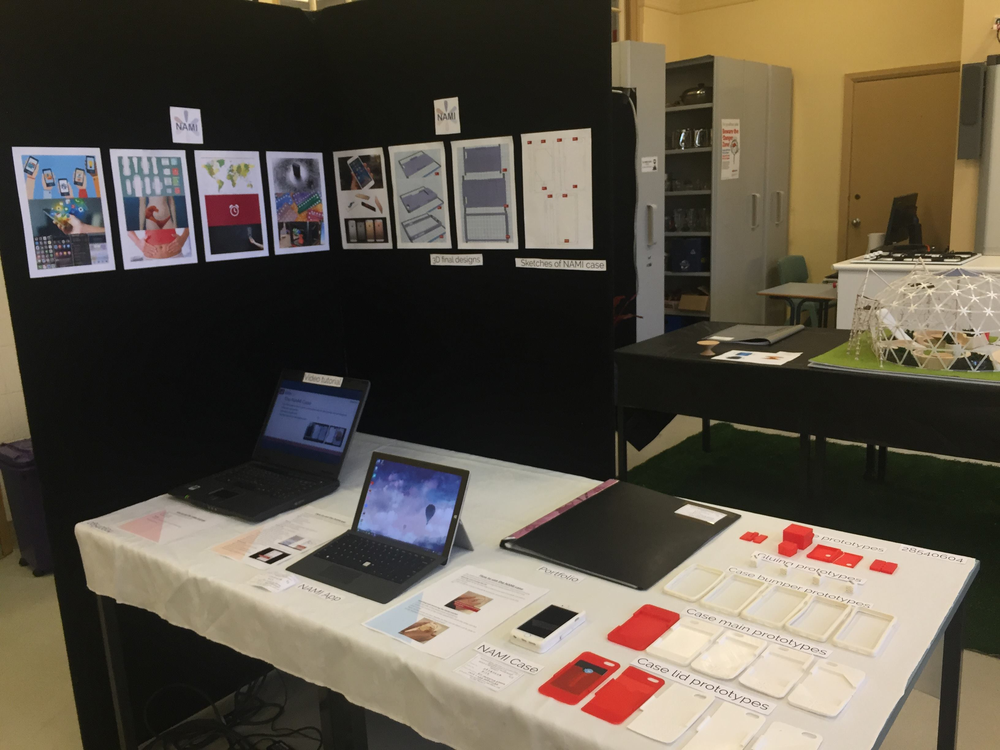

About me
Personal Details
Name: Lisa Quyen DoanDate of Birth: 26/12/1998Email: lisa.doan2625@hotmail.comMobile Number: 0449998287
I was born and raised in Sydney, New South Wales. After completing graduating from Willoughby Girls High School and completed the HSC in 2016, I enrolled to study at University of New South Wales doing the Bachelor of Computational Design. Unfortunately I found that the course was heavily focused on architecture when I wanted to learn more broadly about digital design such as exploring graphic design, 3D modelling, digital fabrication, visual communication and so forth. I am planning on enrolling into University of Sydney in order to study Bachelor of Design Computing. I want to learn the skills and gain the experience needed in a career that utilises emerging technologies.
I have been interested in this field of study since my senior years of high school, electing subjects such as Design and Technology, Software Design Development as well as a TVET (TAFE delivered vocational education and training) Year 12 Major Work: Birth Control Carrier Smart Phone Case and Application course which enabled me to attain a Certificate III in Information and Digital Technology: Web and Software Applications by the end of Year 12. Particularly evident in my major project in Year 12, I've been very fascinated by creative technologies. Completing the first year in the Bachelor of Computational Design at UNSW, I have gained an adequate level of skills including:
- Understanding of computational design theory
- CAD and CAM (Rhinoceros, Grasshopper, Sketchup, Lumion)
- Form making and Fabrication (3D Printers, Laser Cutters)
- Intermediate at Python, HTML, Visual Basic
Additional Documentations
- Reference from Elizabeth Diprose - Principle of Willoughby Girls High School
- Cover Sheet is attached just in case there is any loss of information
{kind=link}